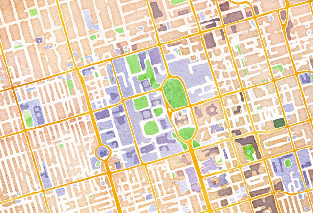
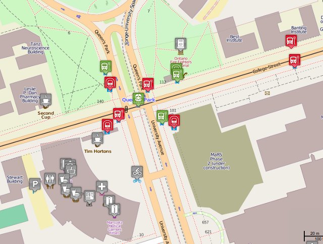

Be a mapper. Contribute your local knowledge to OpenStreetMap and improve the global wiki-style map of everything. It's fun. It's free. You can help.
Mappers update their neighbourhood in OpenStreetMap by adding roads and bicycle paths, businesses and playgrounds. When they share their data with OpenStreetMap it can be used around the world within minutes and is turned into general-purpose, or specialty maps of every sort imaginable. In any language you can imagine.
 You can improve the map in your neighbourhood. It's easy to get started and it's fun.
Map the things that you observe for yourself. Don't copy from other maps. We don't have permission to include information from other maps in OpenStreetMap data and other maps have deliberate errors called trap streets
.
Add the things that you see in your neighbourhood every day. Add your favourite coffee shop and restaurant. Add the local public school and playground. Add the exercise trail through the park. Include the business names and street addresses. Is there a wheelchair accessible swingset at the park? Put it on the map.
Add things that are verifiable by other mappers; we're all collaborating on this map. If a business has a sign, add it to OpenStreetMap. Don't add information that would disturb the privacy of somebody. So, the address of a building is fine. The name of the residential tenant is not.
Add things that are relatively permanent. Is there a public restroom at the local ball diamond? Add it to the map. Did the city place a portable toilet for a parade this weekend? That can be left off the map, or be certain to both add and remove it promptly.
Add your local park picnic table to the map. That's significant enough to add to the map. Don't add the piece of gum stuck under the park bench to the map. It might be permanent and verifiable, but it isn't significant. Just throw the gum away.
It is kind of a big job to want to map the whole world and OpenStreetMap started doing this in 2004. While yiou might initially think that it would take forever
top map a city the size of Toronto, we have many active mappers here. have a look at this animation of the progress we've made since 2004.
Mapping the world is hard, but we're mapping one bowling alley at a time. Mapping one neighbourhood at a time is simpler, fun and gratifying. It's fun to add an object to the database, and then see that object used in general purpose and specialty maps on hundreds of web sites.
It's rewarding to know that the data contributed to OpenStreetMap is able to help people right away. Just as a mapper would help a lost tourist find their way to the subway station; the combined contributions of a mapper over time will help many tourists, or parents, or students, or home owners, or real estate agents.
We need your contributions of local knowledge to OpenStreetMap. Who knows your neighbourhood better than you do? You can add the missing dry cleaners, and you can update the coffee shop when it changes ownership in a few years. We're mapping one neighbourhood at a time and you can map your neighbourhood.
Mappy Hour
Do you want to learn more about OpenStreetMap? Mappy Hour is a fun and informative meeting of OpenStreetMap enthusiasts. Toronto mappers range from programmers and statisticians to musicians and cartographers to engineers and people just like you. We meet to learn from each other and share our mapping experiences. And refreshments.
Mappy Hour is held monthly in Toronto and other cities around the world. Attend a local Mappy Hour or start one near you!
All maps are made from OpenStreetMap data and are © OpenStreetMap Contributors.
Wheelmap image © WheelMap.org and licensed CC-By-SA 2.0
Watercolour image © Stamen design and licensed CC-By 3.0
Toronto map animation © GEOFABRIK, licensed CC-By-SA 2.0
- a regular meeting of mappers for fun and sharing information What is OpenStreetMap - a volunteer created geographic data base - you mean "Like a map?" - I mean, "Like every map. Data that is used to create any specialty map you can imagine. Examples: - beautiful map that looks like a watercolour painting, - map of facilities that are wheelchair accessible, - transit maps that can calculate your travel from Go train to TTC to bixi bike to walking to your destination - and the everyday, general purpose maps we use all the time. - But you say this is volunteer generated? Like Wikipedia? - exactly. In Wikipedia, subject-matter experts contribute to encyclopaedic articles, to create a large body of knowledge. In OpenStreetMap, subject-matter experts contribute geographic data to a large body of geographic data. You map your neighbourhood, I map my neighbourhood, soon we have a great map of all of Toronto's neighbourhoods. - That sounds like it could take a long time. And who are these subject-matter experts? - The people who live there are the subject-matter experts in OpenStreetMap. Who knows your neighbourhood better that you know it? You notice when a new park and playground are constructed nearby and you notice when the dry cleaning shop on the corner changes it's name. You can add that information to OpenStreetMap and share it with the world. - as for taking a long time, it takes only a moment to add a park, or swingset, or coffee shop to OpenStreetMap. By adding these things, roads and businesses and facilities, one at a time, over time we've built a really great map of the world. There is an animation of the growth of the Toronto map since OpenStreetMap started in 2004. - So the map of Toronto is finished? - No, the map of Toronto will never be finished; things change everyday. Roads change and businesses close and reopen. We've dozens of regular mappers in Toronto, and some neighbourhoods are very well mapped indeed. But we really want a mapper in every neighbourhood, to get current and high quality data for everywhere. Or even a mapper on every block. - The map will never be finished? Then why do people do this? - It will never be completely finished. The map of Toronto is pretty good right now. It's a very good example of a successful mapping community in North America. OpenStreetMap started in Europe and so there are European cities that have more data and more mappers. It may seem to be a Sisyphean task, but it's a lot of fun to improve the data and see that data being used around the world within minutes. And mapping is a very Torontonian thing to do; Torontonians love to help lost tourists. I've improved bits and pieces of data over the years, dozens of people could be using that information right now to decide where to move, or to get to their next job interview. I feel great knowing that I can help tourists or other visitors to my neighbourhood, even while I'm enjoying a coffee, or talking on the radio. - And "Mappy Hour" as a regular meeting of OpenStreetMap contributors? - It is. We meet monthly to discuss mapping, to answer questions for new mappers and to learn more about our nieghbourhoods. - The next Mappy Hour is tonight at _C'est What_, 67 Front Street East, from 6:30 to 8:30 - Many examples, links and more details are available at http://BeAMapper.com